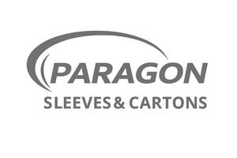

Trade Mark Journal No.2026/006 6 February 2026
UK00004328844 23 January 2026 (7,9,16,17,20,21)

- Class 7
- Packaging machinery; machinery for packaging food; machinery for packing.
- Class 9
- Bar code labels.
- Class 16
- Printed paper labels and packaging sleeves; blank or partially printed paper labels and packaging sleeves; packaging sleeves; leaflets and brochures relating to printing machines, labels and packaging sleeves; adhesive backed printed paper labels and packaging sleeves; packaging materials made of cardboard; packaging materials made of plastic; adhesives for packaging; plastic films for wrapping or packaging; paperboard trays for packaging food, cartons, cartons of plastic material and cartons of foam material; all the aforesaid for use in the printing and packaging industries (except for the printing of books).
- Class 17
- Plastics films for use in the manufacturing of labels and packaging sleeves; adhesive-backed plastics films for use in the manufacture of labels and packaging sleeves; plastic sheet material for use in the manufacture of labels and packaging sleeves; adhesive-backed plastics sheet material for use in the manufacture of labels and packaging sleeves.
- Class 20
- Polypropylene food trays and cartons; polypropylene meat trays; plastic trays [containers] used in food packaging; non-metallic transparent food trays for commercial use.
- Class 21
- Containers, containers of plastic material and containers of foamed material; plastic cups, plates, cartons, and pots; polypropylene cups, plates, cartons and pots; bags for microwave cooking.
Coveris Flexibles UK Limited
Representative: Withers & Rogers LLP